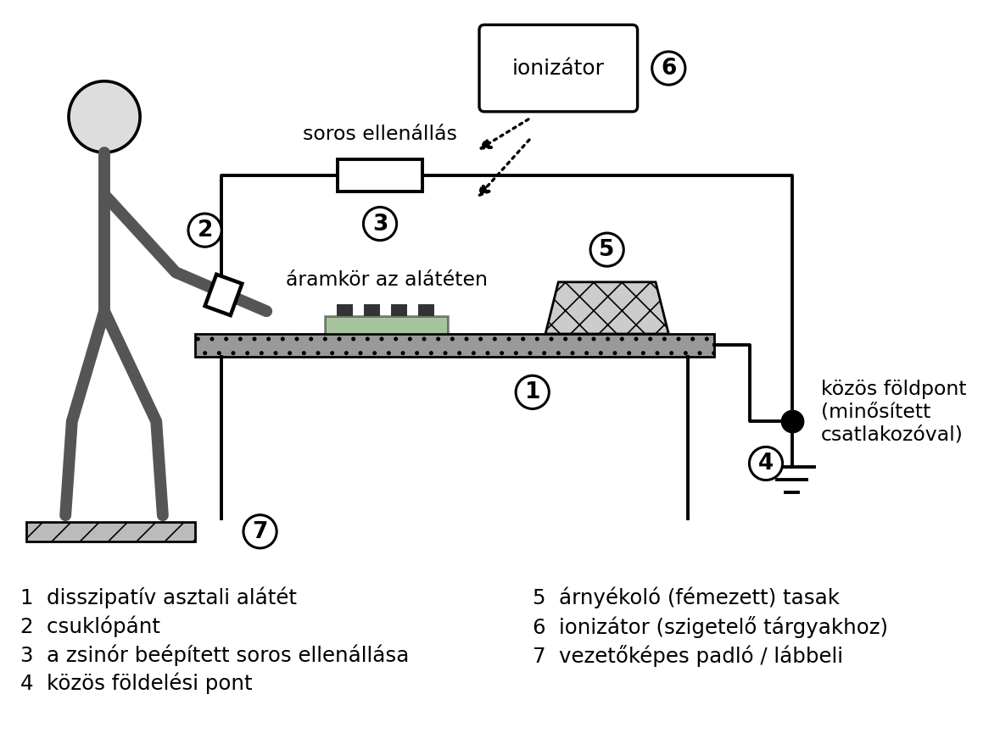

Mire leszel képes az alfejezet végén?
Előfeltétel: Az áram élettani hatásai és a törpefeszültség. A kondenzátorról elég az Energiatárolók veszélyei: akkumulátor, kondenzátor, induktivitás alfejezet.
Kiveszel egy pótalkatrésznek szánt MOSFET-et (egy fajta térvezérlésű tranzisztor, a szenzormodul kapcsolója) a fiókból, megfogod a lábait, beteszed a próbapanelbe. Semmit nem éreztél, mégis: a kapcsoló néha nem zár le rendesen, vagy napokkal később meghibásodik. A bűnös valószínűleg az elektrosztatikus kisülés (electrostatic discharge, ESD): a testeden felgyűlt töltés egy pillanat alatt átugrott az alkatrészre.
Két anyag érintkezésekor, majd szétválásakor töltés mehet át egyikről a másikra. Ha cipőd talpa a szőnyegen jár, vagy ruhád a szék műanyagán csúszik, a tested lassan feltöltődik. Ez a triboelektromos feltöltődés (triboelectric charging). Szigetelő anyagon a töltés ott marad, ahová került; a testeden vagy egy fémen szabadon eloszlik, és bármelyik közeli vezetőn keresztül egyszerre elfolyhat.
A feltöltött test olyan, mint egy feltöltött kondenzátor: a „másik lemez” a környezet. Közelít a kezed egy alkatrészlábhoz, a kis légrés átüt, és egy kis ellenálláson át nagyon rövid ideig nagy áram folyik. Az analógia korlátja: a testkapacitás nem állandó, testtartástól és a környezettől függ, a szikra pedig nem ideális kapcsoló.
A triboelektromosság mellett indukcióval is keletkezik veszély: egy feltöltött műanyag doboz elektromos tere a közelében lévő vezetőben töltéseltolódást, feszültséget hoz létre.
Gondolkodj előre! Egy 2000 V-ra feltöltött, kb. 100 pF-os test hozzáér egy 600 pF-os, mástól elszigetelt MOSFET-gate-hez (a vezérlő elektródához). Mekkora feszültség marad szerinted a gate-en: 2000 V, néhány száz V, vagy pár volt?
A töltés, a kapacitás és a feszültség kapcsolata:
Mértékegység: C/F = V. Szavakkal: ugyanaz a töltés kis kapacitáson nagy feszültséget ad. Az emberi test kapacitása a környezethez nagyságrendileg 100 pF, és száraz levegőn a feszültség több kilovoltot is elérhet (nagyságrendek; ellenőrizendő: ESD Association anyagai [S-ESDA]). 100 pF-on 3 kV mindössze 300 nC töltés. A gyengébb, néhány kilovolt alatti kisüléseket jellemzően meg sem érzed (ellenőrizendő: ESD Association anyagai), miközben érzékeny alkatrészt jóval kisebb feszültség is károsíthat. A páratartalom növelése segíti a töltés elszivárgását, de nem oldja meg a problémát.
A MOSFET gate-jét vékony szigetelő (gate-oxid) választja el a csatornától, ezért egyenáramon nem folyik bele áram, és a ráadott töltés ott marad (A MOSFET működése és adatlapja). Az adatlap abszolút határértéke (az a feszültség, amelyet a legrövidebb időre sem szabad túllépni) a -re a futó példa MOSFET-jénél 12 V (mintaadat). Fölötte az oxid átüthet, és ez többnyire maradandó. A CMOS integrált áramkörök bemenetei hasonló felépítésűek; a beépített védődiódák korlátozott impulzust bírnak (adatlapfüggő).
Ha egy kapacitású, feszültségű test egy üres, gate-kapacitáshoz ér, a töltés megoszlik. A töltésmegmaradásból ():
Szavakkal: a gate a feszültség akkora hányadát kapja, amekkora a test kapacitásának aránya az összes kapacitásban. Mértékegység: F/F egységnélküli, V marad. A képlet felső becslés a rövid pillanatra: nincs benne szivárgás, az oxid letörése és beépített védelem.
Definíció. Az emberi test modell (human body model, HBM) alkatrész-vizsgálati helyettesítő kép: feszültségre töltött kondenzátor, amely soros ellenálláson át sül ki (a paraméterek ellenőrizendők: ANSI/ESDA/JEDEC JS-001 [S-JS001]). Az alkatrész HBM-besorolása azt mondja meg, mekkora vizsgálatot bír ki.
Ha a céltárgy rövidzár, és a felfutást elhanyagoljuk:
Szavakkal: a csúcsáram , és az áram alatt a 37 %-ára csökken. Mértékegység: V/Ω = A, Ω·F = s, F·V² = J. A valódi vizsgálati impulzus néhány nanoszekundumos felfutású (ellenőrizendő: ANSI/ESDA/JEDEC JS-001); ezt a szimulációban egy soros 5 µH induktivitással közelítjük, ami saját modellfeltevés.
Más modellek is léteznek. A CDM (charged device model, feltöltött alkatrész modell) azt írja le, amikor maga az alkatrész töltött, és egyetlen lábán sül ki: sokkal gyorsabb, nagyobb csúcsáramú impulzus, tipikus a gépi kezelésnél. A rendszerszintű vizsgálat (IEC 61000-4-2) más paramétereket használ; ezt az ESD- és túlfeszültség-védelem az áramkörben alfejezet tárgyalja. Egy alkatrész HBM-értéke nem garantálja, hogy a kész készülék ellenáll a rendszerszintű kisülésnek.
Továbbvitt eredmény. A HBM egy 100 pF / 1,5 kΩ-os kisülés, csúcsárama kb. ; a védelem nélküli gate-en töltésmegosztással a határnál jóval nagyobb feszültség marad. Ezt A MOSFET működése és adatlapja, a Szintillesztés, bemenetvédelem és pergésmentesítés és az ESD- és túlfeszültség-védelem az áramkörben használja.
Az ESD nem mindig öl azonnal. Látens károsodásnál (latent damage) az oxid vagy egy átmenet csak részben sérül: az alkatrész átmegy a próbán, de a szivárgóárama megnő, paraméterei elcsúsznak, és hetekkel később hibásodik meg. Ezért a „működik, tehát nem sérült” nem bizonyíték; a megelőzés az egyetlen biztos védelem.
Definíció. Az ESD-védett terület (ESD protected area, EPA) olyan munkahely, ahol az emberek, eszközök és anyagok potenciálkülönbségét kis értéken tartják, és a töltés lassan, ellenőrzött ellenálláson át vezetődik el.

Otthoni minimum: disszipatív alátét és csuklópánt. Az áramkörbe épített védelem az ESD- és túlfeszültség-védelem az áramkörben témája.
Továbbvitt eredmény. Az ESD nanoszekundumos, nagy csúcsáramú impulzus, ezért az áramkör szempontjából gyors zavarforrás is: Az EMC alapjai: forrás, csatolás, vevő és az ESD- és túlfeszültség-védelem az áramkörben így kezeli.
1. Töltés és energia: , . Apró energia, de nanoszekundumok alatt, kis térfogatban.
2. HBM csúcsáram: , . A felfutást is modellező szimuláció 1,25 A-t ad.
3. Gate: (a MOSFET bemeneti kapacitása, mintaadat; a valóságban feszültségfüggő):
Ez a 12 V-os határ 24-szerese. Már -os test elérné a határt, pedig ennyit észre sem veszel. Ez a „gondolkodj előre” válasza: néhány száz volt.
A 100 kΩ-os gate–source ellenállás alatt süti ki a gate-et. Ez több százszor hosszabb, mint a 150 ns-os impulzus, tehát az impulzus csúcsát nem csökkenti.
4. Csuklópánt: , : . 3 kV-ról 100 V-ra , a kezdőáram csak 3 mA. A test gyakorlatilag azonnal kisül, de ezerszer kisebb csúcsárammal, mint 1,5 kΩ-on.
A szimuláció a soros –– kisülést és a gate-et (kapacitás és lehúzó ellenállás) oldja meg.
from math import log
from elkit import transient as tr
def hbm(u0, gate, t_end, dt):
c = tr.Circuit().add_capacitor("C_t", "a", "0", 100e-12, u0=u0)
c.add_resistor("R_t", "a", "m", 1500).add_inductor("L_s", "m", "g", 5e-6, i0=0.0)
if gate:
c.add_capacitor("C_g", "g", "0", 600e-12, u0=0.0).add_resistor("R_G", "g", "0", 100e3)
else:
c.add_resistor("R_k", "g", "0", 1e-3)
return c.simulate(t_end=t_end, dt=dt)
short = hbm(2000.0, False, 600e-9, 0.2e-9)
print(f"rövidzár: I_p = {short.i('L_s').max():.2f} A, U0/R = {2000 / 1500:.2f} A")
res = hbm(2000.0, True, 3e-6, 0.5e-9)
peak = res.v("g").max()
print(f"gate: csúcs = {peak:.0f} V, töltésmegosztás: {2000 * 100 / 700:.0f} V")
print(f"csuklópánt: t(3 kV → 100 V) = {1e6 * 100e-12 * log(30) * 1e6:.0f} µs")rövidzár: I_p = 1.25 A, U0/R = 1.33 A
gate: csúcs = 282 V, töltésmegosztás: 286 V
csuklópánt: t(3 kV → 100 V) = 340 µsA szimulált csúcs kicsit kisebb a becslésnél, mert a töltés egy része már a feltöltődés alatt elszivárog a 100 kΩ-on.
Két anyag érintkezése és szétválása, valamint az indukció feltölti a testet és a tárgyakat; száraz környezetben ez több kilovolt is lehet. A kisülés nanoszekundumos, nagy csúcsáramú impulzus, amelynek kis energiája is tönkretehet egy MOSFET gate-oxidot vagy CMOS-bemenetet, azonnal vagy látensen, hetekkel később jelentkezve. Továbbvitt eredmény: a HBM 100 pF-os kondenzátor kisülése 1,5 kΩ-on át (ellenőrizendő: JS-001), csúcsárama kb. , a védelem nélküli gate feszültsége , a lehúzó ellenállás ehhez túl lassú. Védekezés: ESD-védett munkahely, soros ellenállású csuklópánt, disszipatív alátét közös földponton, árnyékoló csomagolás és óvatos kezelés. A munkahelyi védekezést az áramkörbe épített védelem egészíti ki, ez azonban későbbi téma.
1. , , .
2. , a 12 V-os példahatár fölött.
3. , E6-ból 4,7 nF. A nagy gate-kapacitás lassítja a kapcsolást és nagyobb meghajtóáramot kér, nagyobb feszültségre pedig nem elég; helyette feszültséghatároló védőelemek használatosak (ESD- és túlfeszültség-védelem az áramkörben).
4. , . A 24 V-os érintés árama a 24 µA helyett. Mindkét idő rövid az emberi mozdulatokhoz képest; az elfogadható tartományt azonban az ESD-előírás és a gyártó adja (ellenőrizendő).
5. Árnyékoló (fémezett) tasak, lezárva, merev dobozban; kivenni csak védett helyen, a szélénél fogva. A rózsaszín tasak egyedül nem véd külső kisülés ellen.
6. A kör lineáris, ezért a csúcs arányos -val: egy futtatásból .
print(f"U0 határ = {12 * 2000 / peak:.1f} V")U0 határ = 85.0 VA 100 kΩ már a feltöltődés alatt elvisz egy kevés töltést, ezért a csúcs kisebb, a határfeszültség pedig kicsit nagyobb, mint a veszteségmentes 84 V. A valóságban a gate-kapacitás feszültségfüggése és a beépített védelem ennél jóval nagyobb eltérést is okozhat.